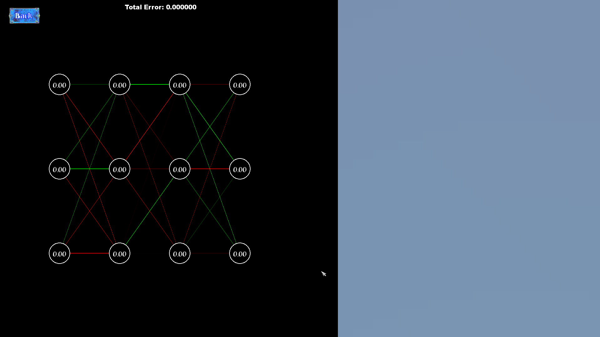
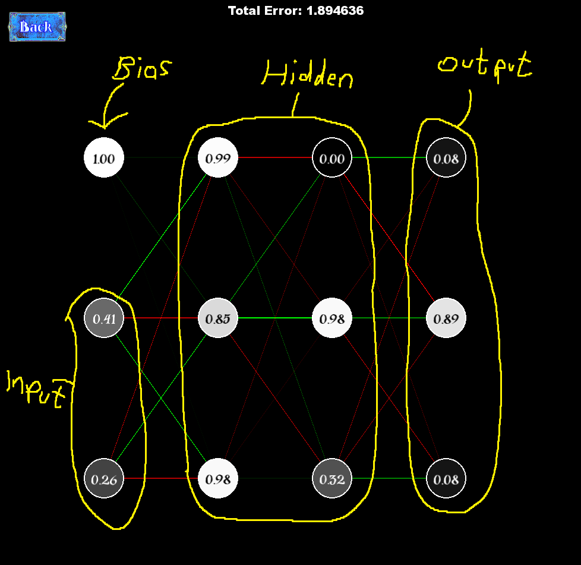
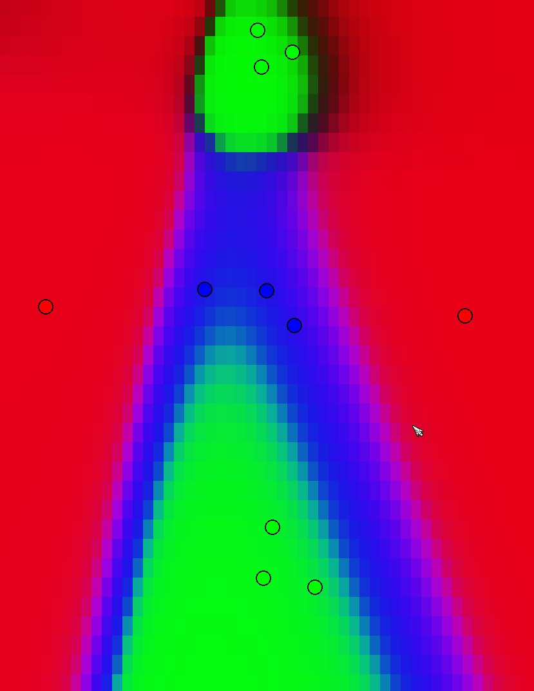
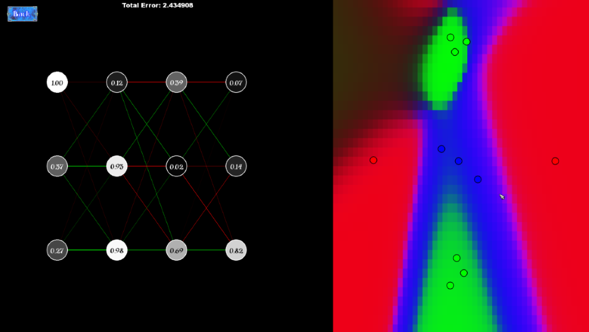

How does the neural network work
The neural network operates differently from other components in this project; it is not connected to my RTS game but is a standalone feature to showcase my skills and explain how neural networks function.
What is a Neural Network?
A neural network is a computer model inspired by the human brain's network of neurons. It consists of layers of interconnected nodes mainly called (neurons) that can learn to perform specific tasks by processing data through the network.
Neural networks are widely used in machine learning to recognize patterns, make decisions, and predict outcomes based on input data.
Neural Perceptrons (Left Side)
The left side of the displays the neural perceptrons, which are the fundamental units of the network. Each perceptron in various layers (input, hidden, output) is responsible for receiving inputs (either from the original data or the previous layer), processing them through weighted sums and biases, and passing the result through an activation function. This side visually represents how each perceptron interacts and transmits information to the next, forming the basis of data processing in the network.
Visual Representation (Right Side)
On the right side, you see a visual representation of the neural network's output. This area changes colors based on what the neural network has learned from the data. It visually demonstrates the network's ability to classify or predict outcomes based on input data, this shows the network's performance and learning progress.
How does it work?
Training a neural network involves:
- Forward Propagation: Feeding input data through the network. Each neuron applies a weighted sum of the inputs and a bias (bias is always 1), then uses an activation function to produce an output. This output becomes the input for the next layer.
- Back Propagation: After predicting an output, the network calculates the error (difference between the predicted output and the actual desired output). The network then adjusts the weights and biases in reverse, from the output back to the input layer, to minimize this error over many iterations. This process is known as learning or training.
- Interplay: Users can interact with the network by adding inputs (like clicking to add dots of different colors - RBG) and see how the network learns to classify these inputs over time. This feature can be highlighted as an engaging way to understand how training data affects the neural network's predictions.
Purpose
The purpose of this was to show my understanding on neural networks and my first attempt at making something to do with neural networks i wish to implement neural networks eventualy into my game.
